5 Análisis Univariado
A continuación se procederá a examinar cada variable de forma individual con el objetivo de entender su distribución, medidas centrales y de dispersión. Para complementar el análisis utilizaremos tablas de frecuencia y gráficos apropiados para cada tipo de variable.
5.1 Variables categóricas
5.1.1 Variable Respuesta: (Diabetes)
Tabla
| Diabetes | Frecuencia | Porcentaje |
|---|---|---|
| 0 | 35346 | 50 |
| 1 | 35346 | 50 |
Como podemos observar, dado que el archivo es el conjunto de datos con la división 50/50 (5050split), la variable respuesta Diabetes está perfectamente balanceada entre las dos categorías.
Gráfico
grafico_barras(tabla_y, "Diabetes",
orden = c(0, 1),
etiquetas = c("0.0\n(No Diabetes)", "1.0\n(Prediabetes / Diabetes)"),
colores = c("#4C72B0", "#DD8452"),
titulo = "Distribución de la variable Diabetes",
xlab = "Estado", ylab = "Frecuencia",
mostrar_pct = FALSE)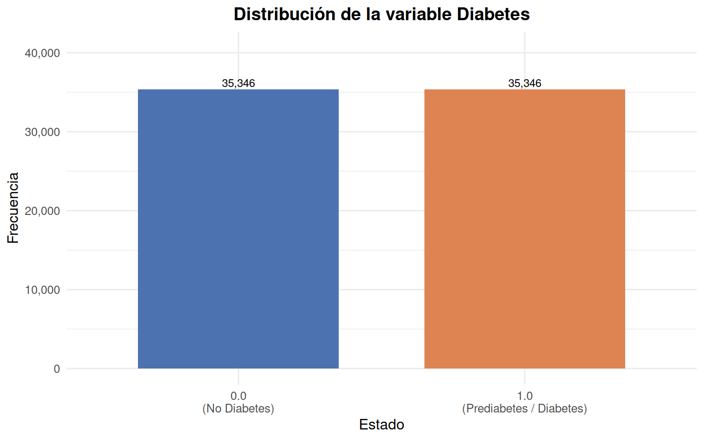
Este gráfico muestra la distribución de los pacientes con y sin diabetes, confirmando que tiene distribución 50/50.
5.1.2 Variable PA_alta (Presión Arterial Alta)
Tabla
| PA_alta | Frecuencia | Porcentaje |
|---|---|---|
| 1 | 39832 | 56.3 |
| 0 | 30860 | 43.7 |
Gráfico
grafico_barras(tabla_pa, "PA_alta",
orden = c(0, 1),
etiquetas = c("0.0\n(No)", "1.0\n(Sí)"),
colores = c("#55A868", "#C44E52"),
titulo = "Distribución de la variable PA_alta (Presión Arterial Alta)",
xlab = "Estado", ylab = "Frecuencia",
mostrar_pct = FALSE)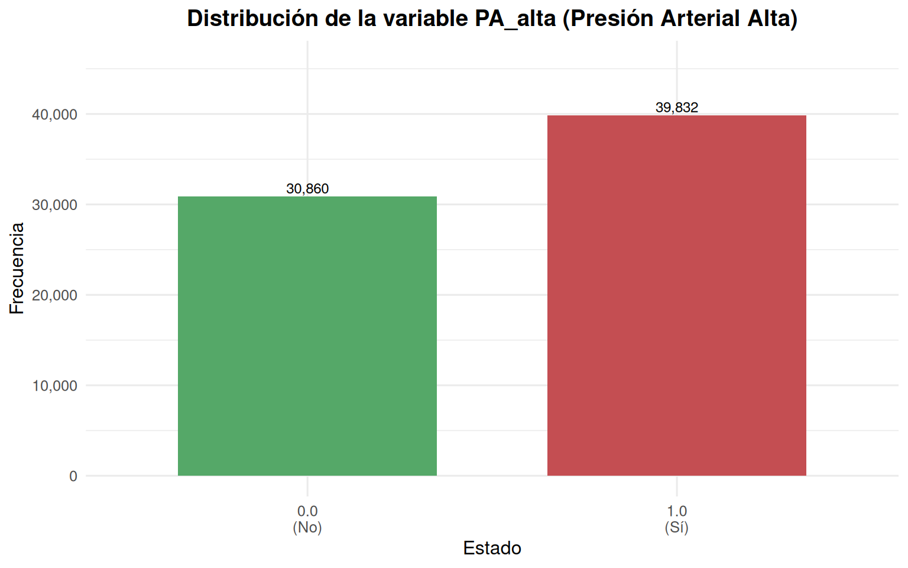
Como podemos observar en la tabla, el 56.3% de los participantes en esta base de datos balanceada reporta no tener presión arterial alta, frente al 43.7% que sí la reporta.
5.1.3 Variable col_alto (Colesterol Alto)
Tabla
| col_alto | Frecuencia | Porcentaje |
|---|---|---|
| 1 | 37163 | 52.6 |
| 0 | 33529 | 47.4 |
Gráfico
grafico_pastel(tabla_col, "col_alto",
etiquetas = c("1.0\n(Sí tiene)", "0.0\n(No tiene)"),
colores = c("#e74c3c", "#2ecc71"),
titulo = "Distribución de la variable col_alto (Colesterol Alto)")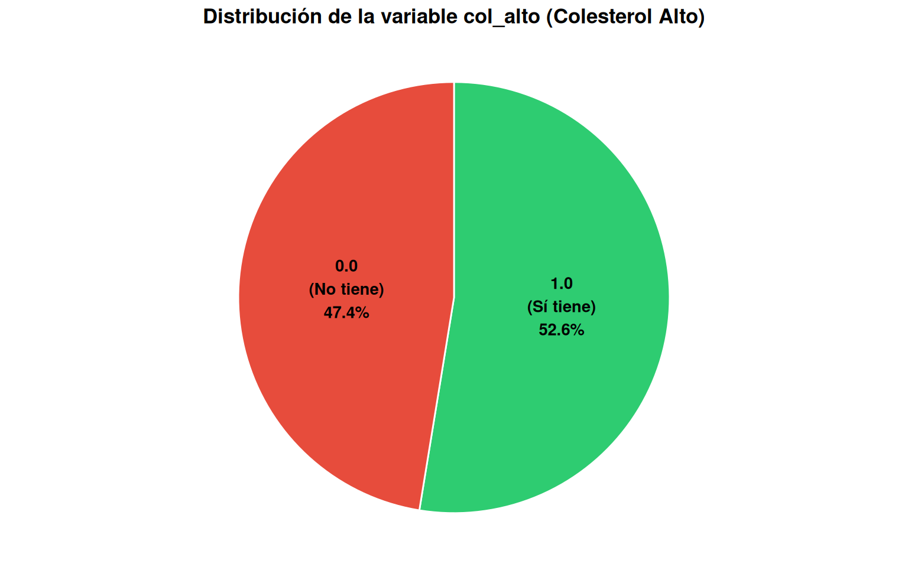
La tabla indica que hay una proporción ligeramente mayor de personas diagnosticadas con colesterol alto en esta muestra balanceada.
5.1.4 Variable CheckCol (Chequeo de Colesterol en últimos 5 años)
Tabla
| CheckCol | Frecuencia | Porcentaje |
|---|---|---|
| 1 | 68943 | 97.5 |
| 0 | 1749 | 2.5 |
Gráfico
grafico_pastel(tabla_checkcol, "CheckCol",
etiquetas = c("1.0\n(Sí se chequeó)", "0.0\n(No se chequeó)"),
colores = c("#3498db", "#e67e22"),
titulo = "Distribución de la variable CheckCol\n(Chequeo de Colesterol en últimos 5 años)",
donut = TRUE)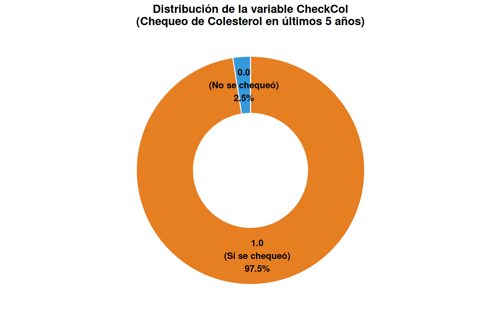
Como podemos observar, la inmensa mayoría de las personas en esta base de datos (97.5%) sí se han realizado un chequeo de colesterol en los últimos 5 años.
5.1.5 Variable Fumador
Tabla
| Fumador | Frecuencia | Porcentaje |
|---|---|---|
| 0 | 37094 | 52.5 |
| 1 | 33598 | 47.5 |
Grafica
tabla_fumador_lollipop <- tabla_fumador %>%
mutate(Fumador_lbl = ifelse(Fumador == 0, "No fumador", "Fumador")) %>%
arrange(Frecuencia)
grafico_lollipop(tabla_fumador_lollipop, "Fumador",
etiquetas = tabla_fumador_lollipop$Fumador_lbl,
colores = c("#a1d99b", "#e74c3c"),
titulo = "Distribución de la variable Fumador (Gráfico de Piruleta)")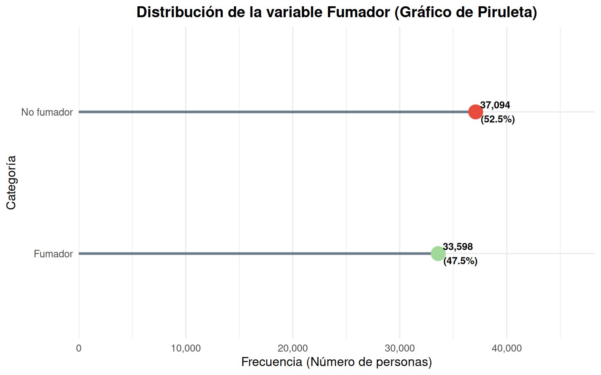
Como podemos observar en la tabla, la muestra está bastante equilibrada en cuanto al tabaquismo.
5.1.6 Variable derrame (Derrame Cerebral)
Tabla
| derrame | Frecuencia | Porcentaje |
|---|---|---|
| 0 | 66297 | 93.8 |
| 1 | 4395 | 6.2 |
Gráfico
grafico_barras(tabla_derrame, "derrame",
orden = c(0, 1),
etiquetas = c("0.0\n(No ha tenido)", "1.0\n(Sí ha tenido)"),
colores = c("#4C72B0", "#DD8452"),
titulo = "Distribución de la variable derrame (Derrame Cerebral)",
xlab = "Derrame Cerebral", ylab = "Frecuencia (Número de personas)",
mostrar_pct = FALSE)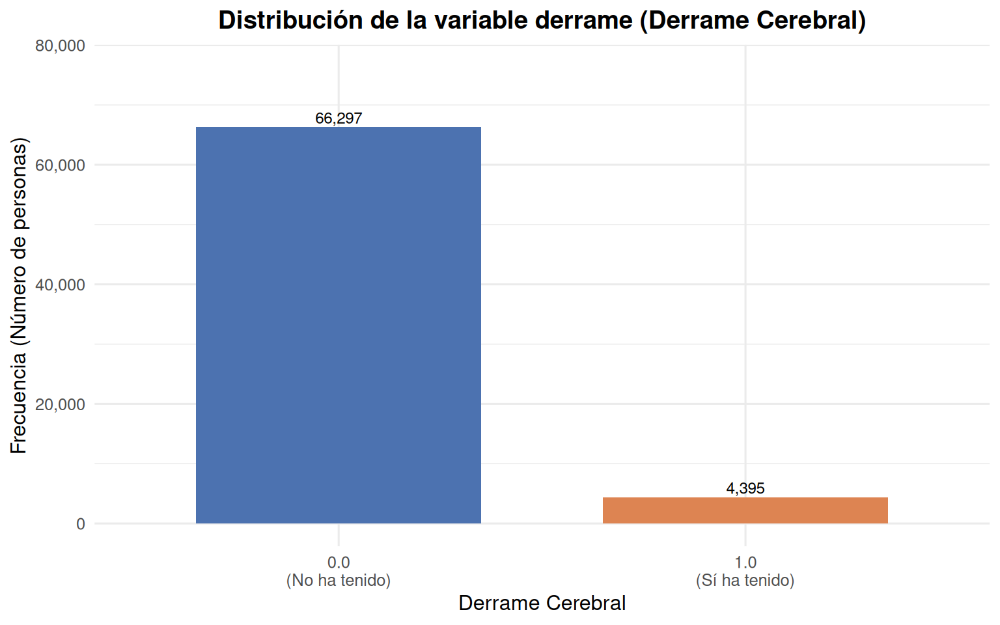
Como podemos ver, la gran mayoría de los pacientes en esta base de datos (93.8%) no han reportado haber tenido un derrame cerebral.
5.1.7 Variable EnfCardi (Enfermedad Cardiaca)
Tabla
| EnfCardi | Frecuencia | Porcentaje |
|---|---|---|
| 0 | 60243 | 85.2 |
| 1 | 10449 | 14.8 |
Gráfico
grafico_barras_h(tabla_enfcardi, "EnfCardi",
orden = c(0, 1),
etiquetas = c("0.0\n(No ha tenido)", "1.0\n(Sí ha tenido)"),
colores = c("#3498db", "#e74c3c"),
titulo = "Distribución de la variable EnfCardi\n(Enfermedad Cardiaca)",
xlab = "Frecuencia (Número de personas)", ylab = "Enfermedad Cardíaca")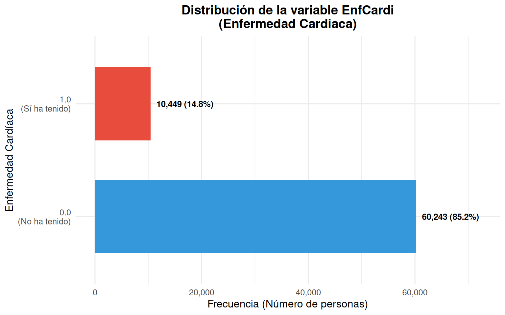
El 85.2% de las personas en esta base de datos no tiene un historial de enfermedades coronarias o ataques cardíacos.
5.1.8 Variable ActFisi (Actividad Física en los últimos 30 días)
Tabla
| ActFisi | Frecuencia | Porcentaje |
|---|---|---|
| 1 | 49699 | 70.3 |
| 0 | 20993 | 29.7 |
Grafica
grafico_barras(tabla_act, "ActFisi",
orden = c(1, 0),
etiquetas = c("1.0\n(Sí realizó)", "0.0\n(No realizó)"),
colores = c("#2ecc71", "#e74c3c"),
titulo = "Distribución de la variable ActFisi\n(Actividad Física en los últimos 30 días)",
xlab = "Actividad Física", ylab = "Frecuencia (Número de personas)")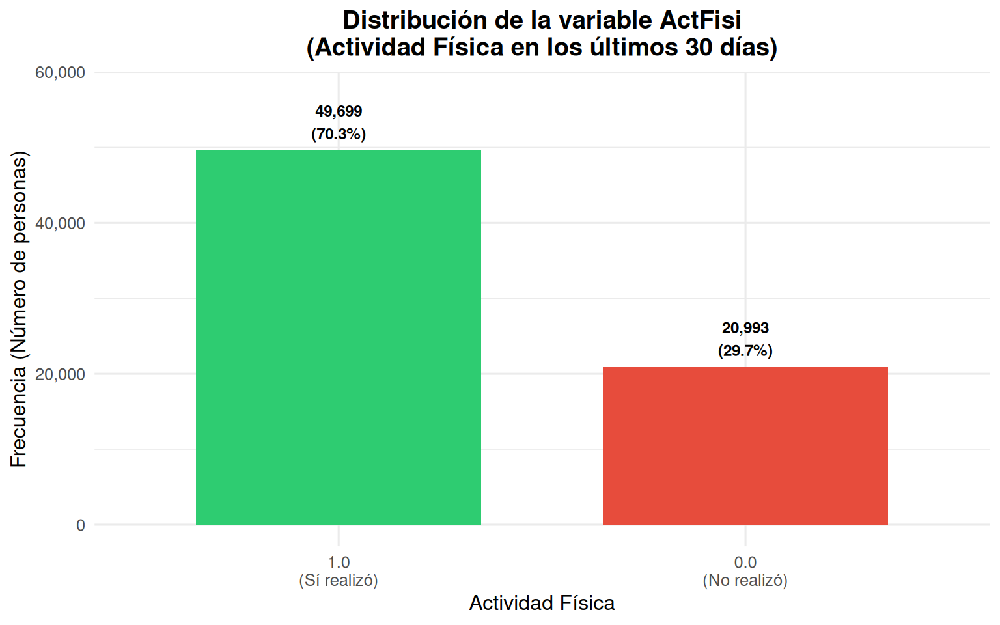
El 70.3% de las personas encuestadas reporta haber realizado actividad física recientemente.
5.1.9 Variable fruta (Consumo diario de fruta)
Tabla
| fruta | Frecuencia | Porcentaje |
|---|---|---|
| 1 | 43249 | 61.2 |
| 0 | 27443 | 38.8 |
Gráfico
grafico_pastel(tabla_fruta, "fruta",
etiquetas = c("1.0\n(Consume fruta 1+ vez al día)", "0.0\n(No consume fruta diariamente)"),
colores = c("#2ecc71", "#e74c3c"),
titulo = "Distribución de la variable fruta\n(Consumo diario de fruta)")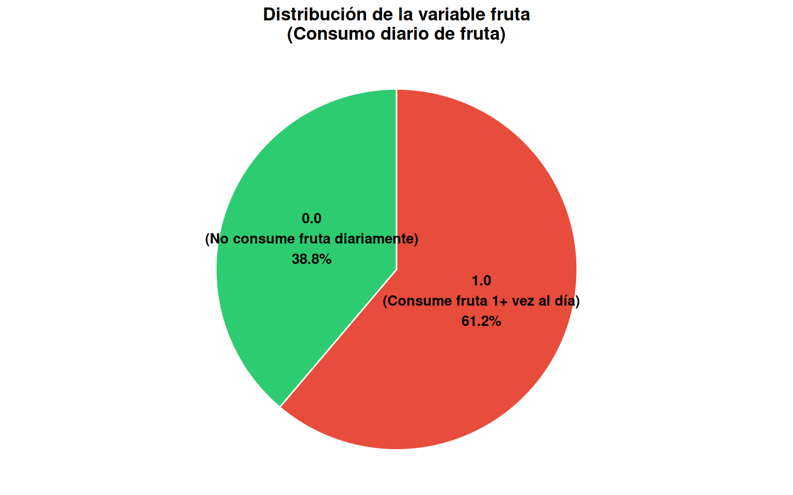
El 61.2% de las personas encuestadas reporta consumir fruta al menos una vez al día.
5.1.10 Variable vegetales (Consumo diario de vegetales)
Tabla
| vegetales | Frecuencia | Porcentaje |
|---|---|---|
| 1 | 55760 | 78.9 |
| 0 | 14932 | 21.1 |
Gráfico
grafico_pastel(tabla_vegetales, "vegetales",
etiquetas = c("1.0\n(Consume vegetales 1+ vez al día)", "0.0\n(No consume vegetales diariamente)"),
colores = c("#27ae60", "#e74c3c"),
titulo = "Distribución de la variable vegetales\n(Consumo diario de vegetales)")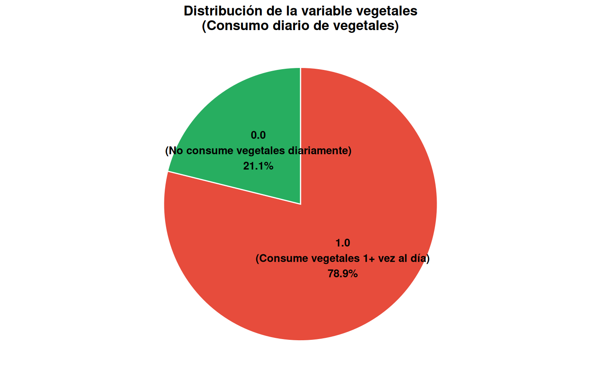
El 78.9% de las personas en la muestra reporta consumir vegetales al menos una vez al día.
5.1.11 Variable Alcohlico
Tabla
| Alcohlico | Frecuencia | Porcentaje |
|---|---|---|
| 0 | 67672 | 95.7 |
| 1 | 3020 | 4.3 |
Gráfico
grafico_lollipop(tabla_alcohol, "Alcohlico",
etiquetas = c("0.0\n(No bebedor pesado)", "1.0\n(Bebedor pesado)"),
colores = c("#7f8c8d", "#d35400"),
titulo = "Distribución de la variable Alcohlico")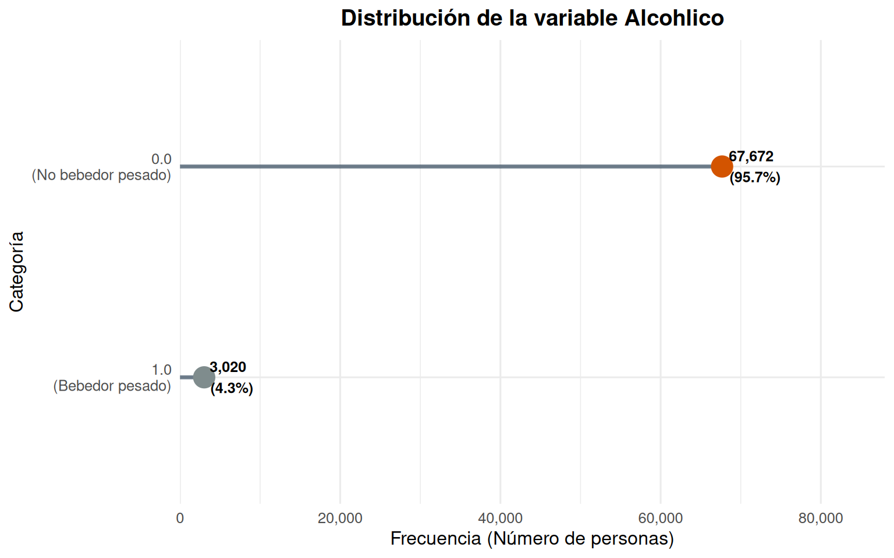
Como se puede observar en los datos, una inmensa mayoría de la muestra (95.7%) no entra en la categoría de bebedor pesado.
5.1.12 Variable eps (Cobertura médica / EPS)
Tabla
| eps | Frecuencia | Porcentaje |
|---|---|---|
| 1 | 67508 | 95.5 |
| 0 | 3184 | 4.5 |
Gráfico
grafico_barras(tabla_eps, "eps",
orden = c(1, 0),
etiquetas = c("1.0\n(Sí tiene EPS)", "0.0\n(No tiene EPS)"),
colores = c("#2980b9", "#e67e22"),
titulo = "Distribución de la variable eps\n(Tiene cobertura médica / EPS)",
xlab = "Cobertura Médica (EPS)", ylab = "Frecuencia (Número de personas)")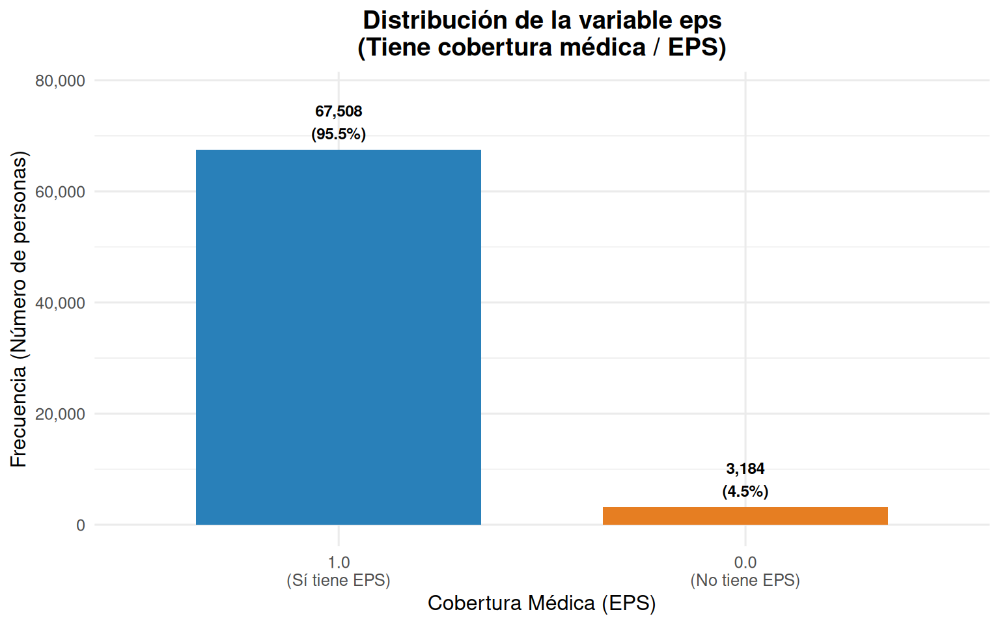
Como se puede ver en la tabla, una amplísima mayoría de la población analizada (95.5%) cuenta con cobertura médica.
5.1.13 Variable AfordabilidadMedica
Tabla
tabla_afordabilidad <- tabla_frecuencias(df, "AfordabilidadMedica")
mostrar_tabla(tabla_afordabilidad)| AfordabilidadMedica | Frecuencia | Porcentaje |
|---|---|---|
| 0 | 64053 | 90.6 |
| 1 | 6639 | 9.4 |
Gráfico
grafico_pastel(tabla_afordabilidad, "AfordabilidadMedica",
etiquetas = c("0.0\n(No tuvo barrera por costo)", "1.0\n(Sí dejó de ir al médico por costo)"),
colores = c("#3498db", "#e74c3c"),
titulo = "Distribución de la variable AfordabilidadMedica\n(No pudo ver al médico por costo en los últimos 12 meses)",
donut = TRUE)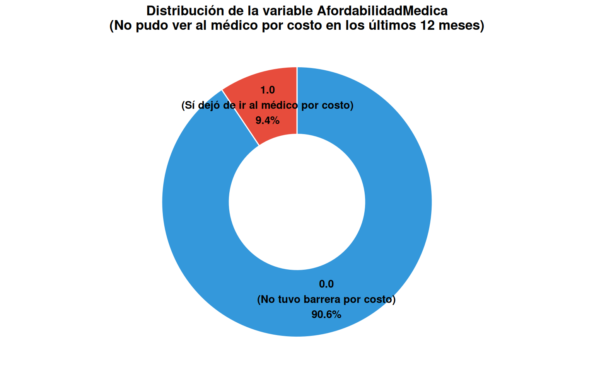
Como se observa en los datos, la gran mayoría de los encuestados (90.6%) no experimentó limitaciones económicas para ver a un médico.
5.1.14 Variable SaludG (Salud general percibida)
Tabla
| SaludG | Frecuencia | Porcentaje |
|---|---|---|
| 1 | 8282 | 11.7 |
| 2 | 19872 | 28.1 |
| 3 | 23427 | 33.1 |
| 4 | 13303 | 18.8 |
| 5 | 5808 | 8.2 |
Grafica
etiquetas_salud <- c("1.0\n(Excelente)", "2.0\n(Muy buena)", "3.0\n(Buena)", "4.0\n(Regular)", "5.0\n(Pobre)")
grafico_barras(tabla_saludg, "SaludG",
orden = sort(unique(tabla_saludg$SaludG)),
etiquetas = etiquetas_salud,
colores = paleta_viridis(nrow(tabla_saludg), "viridis"),
titulo = "Distribución de la variable SaludG\n(¿Diría que en general su salud es...?)",
xlab = "Categoría de Salud General", ylab = "Frecuencia (Número de personas)")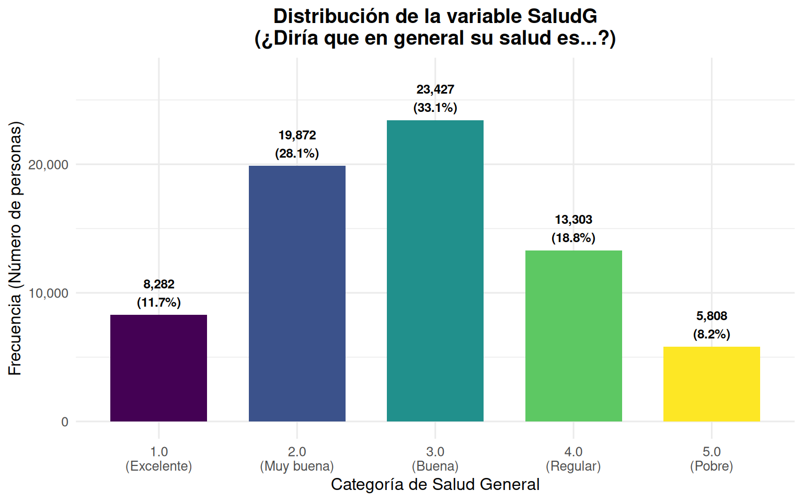
Como se observa en los datos, la mayor concentración de respuestas se encuentra en las categorías de salud buena y muy buena.
5.1.15 Variable DificultadCaminar
Tabla
| DificultadCaminar | Frecuencia | Porcentaje |
|---|---|---|
| 0 | 52826 | 74.7 |
| 1 | 17866 | 25.3 |
Grafica
grafico_barras(tabla_diffwalk, "DificultadCaminar",
orden = c(0, 1),
etiquetas = c("0.0\n(No tiene dificultad)", "1.0\n(Sí tiene dificultad)"),
colores = c("#34495e", "#e74c3c"),
titulo = "Distribución de la variable DificultadCaminar\n(¿Tiene seria dificultad para caminar o subir escaleras?)",
xlab = "Dificultad para caminar", ylab = "Frecuencia (Número de personas)")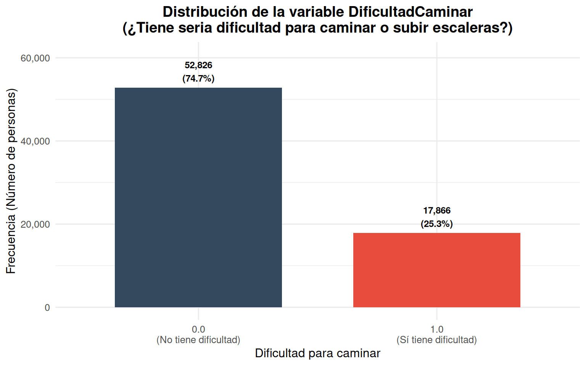
Como se puede observar en los datos, la gran mayoría de la población encuestada (74.7%) no reporta problemas serios para caminar.
5.1.16 Variable Genero
Tabla
| Genero | Frecuencia | Porcentaje |
|---|---|---|
| 0 | 38386 | 54.3 |
| 1 | 32306 | 45.7 |
Gráfico
grafico_barras(tabla_genero, "Genero",
orden = c(0, 1),
etiquetas = c("0.0\n(Mujer)", "1.0\n(Hombre)"),
colores = c("#3498db", "#e84393"),
titulo = "Distribución de la variable Genero\n(Sexo del encuestado)",
xlab = "Género", ylab = "Frecuencia (Número de personas)")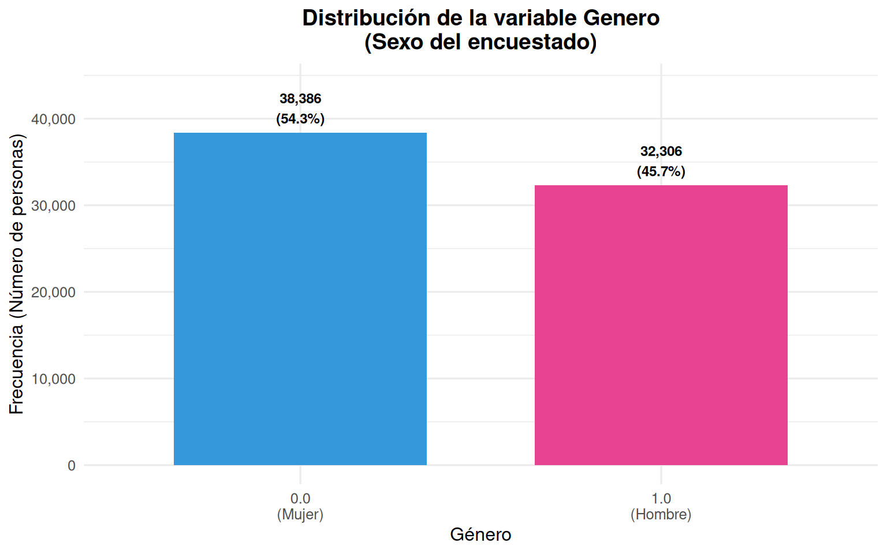
Como se puede ver en los datos, la muestra cuenta con una mayor proporción de mujeres (54.3%) frente a hombres.
5.1.17 Variable Edad
Tabla
| Edad | Frecuencia | Porcentaje |
|---|---|---|
| 1 | 979 | 1.4 |
| 2 | 1396 | 2.0 |
| 3 | 2049 | 2.9 |
| 4 | 2793 | 4.0 |
| 5 | 3520 | 5.0 |
| 6 | 4648 | 6.6 |
| 7 | 6872 | 9.7 |
| 8 | 8603 | 12.2 |
| 9 | 10112 | 14.3 |
| 10 | 10856 | 15.4 |
| 11 | 8044 | 11.4 |
| 12 | 5394 | 7.6 |
| 13 | 5426 | 7.7 |
Gráfico
etiquetas_edad <- c("1: 18-24", "2: 25-29", "3: 30-34", "4: 35-39",
"5: 40-44", "6: 45-49", "7: 50-54", "8: 55-59",
"9: 60-64", "10: 65-69", "11: 70-74", "12: 75-79", "13: 80+")
grafico_barras(tabla_edad, "Edad",
orden = sort(unique(tabla_edad$Edad)),
etiquetas = etiquetas_edad,
colores = paleta_viridis(nrow(tabla_edad), "crest"),
titulo = "Distribución de la variable Edad\n(Rangos de edad en la encuesta)",
xlab = "Categorías de Edad", ylab = "Frecuencia (Número de personas)",
mostrar_pct = FALSE, angulo_x = 45)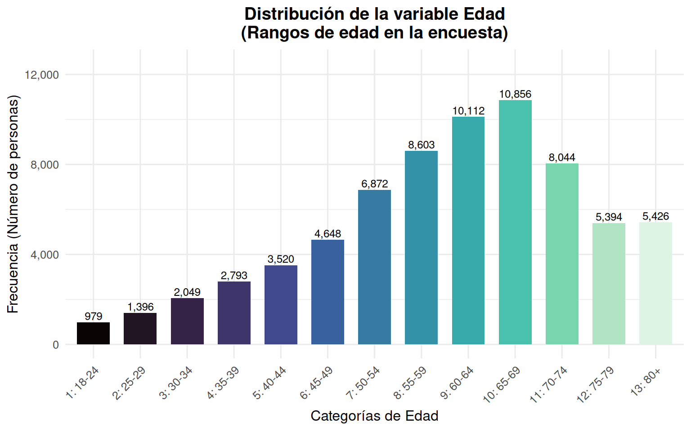
La distribución etaria tiende a sesgarse hacia los adultos de mediana edad y adultos mayores.
5.1.18 Variable Educacion
Tabla
tabla_educacion <- tabla_frecuencias(df, "Educacion", sort_by_index = TRUE)
mostrar_tabla(tabla_educacion)| Educacion | Frecuencia | Porcentaje |
|---|---|---|
| 1 | 75 | 0.1 |
| 2 | 1647 | 2.3 |
| 3 | 3447 | 4.9 |
| 4 | 19473 | 27.5 |
| 5 | 20030 | 28.3 |
| 6 | 26020 | 36.8 |
Gráfico
etiquetas_educacion <- c("1: Nunca/Primaria baja", "2: Primaria (1-8)", "3: Secundaria inc.",
"4: Secundaria grad.", "5: Universidad inc.", "6: Univ. graduado")
grafico_barras(tabla_educacion, "Educacion",
orden = sort(unique(tabla_educacion$Educacion)),
etiquetas = etiquetas_educacion,
colores = paleta_viridis(nrow(tabla_educacion), "mako"),
titulo = "Distribución de la variable Educacion\n(Nivel educativo máximo alcanzado)",
xlab = "Nivel Educativo", ylab = "Frecuencia (Número de personas)",
angulo_x = 20)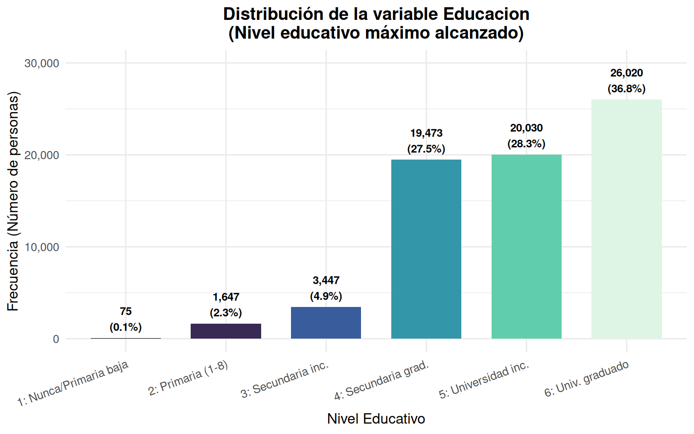
La mayoría de personas encuestadas completaron al menos la secundaria mientras que unos pocos tienen estudios básicos incompletos.
5.1.19 Variable Ingresos
Tabla
tabla_ingresos <- tabla_frecuencias(df, "Ingresos", sort_by_index = TRUE)
mostrar_tabla(tabla_ingresos)| Ingresos | Frecuencia | Porcentaje |
|---|---|---|
| 1 | 3611 | 5.1 |
| 2 | 4498 | 6.4 |
| 3 | 5557 | 7.9 |
| 4 | 6658 | 9.4 |
| 5 | 8010 | 11.3 |
| 6 | 10287 | 14.6 |
| 7 | 11425 | 16.2 |
| 8 | 20646 | 29.2 |
Gráfico
etiquetas_ingresos <- c("1: <$10k", "2: $10k-$15k", "3: $15k-$20k", "4: $20k-$25k",
"5: $25k-$35k", "6: $35k-$50k", "7: $50k-$75k", "8: $75k+")
grafico_barras(tabla_ingresos, "Ingresos",
orden = sort(unique(tabla_ingresos$Ingresos)),
etiquetas = etiquetas_ingresos,
colores = paleta_viridis(nrow(tabla_ingresos), "rocket"),
titulo = "Distribución de la variable Ingresos\n(Nivel de ingresos familiares anuales)",
xlab = "Rangos de Ingresos", ylab = "Frecuencia (Número de personas)",
angulo_x = 15)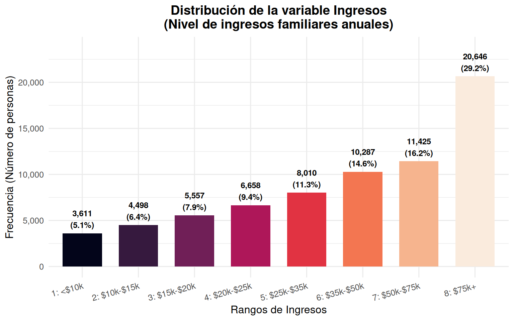
Podemos ver que la mayoría de personas encuestadas cuentan con ingresos anuales superiores a 25k$.
5.2 Variables Numéricas
5.2.1 Variable IMC (Índice de Masa Corporal)
Tabla
| Estadistica | Valor |
|---|---|
| Promedio | 29.86 |
| Rango Intercuartil (IQR) | 8 (Q1: 25, Q3: 33) |
| Mínimo | 12 |
| Máximo | 98 |
Gráfico
grafico_histograma(df, "IMC",
color = "#3498db", bins = 40,
titulo = "Distribución (Histograma) de la variable IMC",
xlab = "Índice de Masa Corporal (IMC)")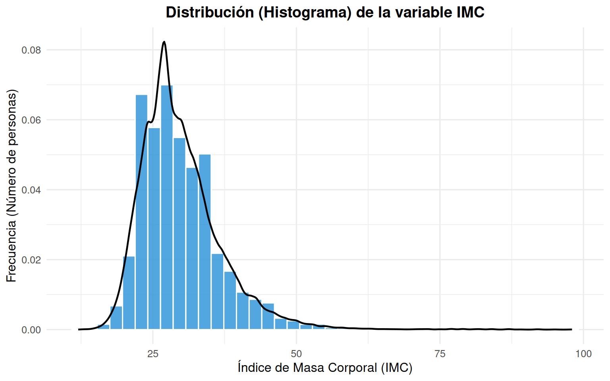
Como podemos ver, la distribución no es una campana simétrica perfecta. Tiene una “cola” larga que se extiende hacia valores altos de IMC.
5.2.2 Variable SaludM (días de mala salud mental en los últimos 30 días)
Tabla
| Estadistica | Valor |
|---|---|
| Promedio | 3.75 |
| Rango Intercuartil (IQR) | 2 (Q1: 0, Q3: 2) |
| Mínimo | 0 |
| Máximo | 30 |
Gráfico
grafico_boxplot_simple(df, "SaludM",
color = "#e74c3c",
titulo = "Diagrama de Cajas y Bigotes para la variable SaludM\n(Días con mala salud mental en los últimos 30 días)",
xlab = "Número de días (0 a 30)")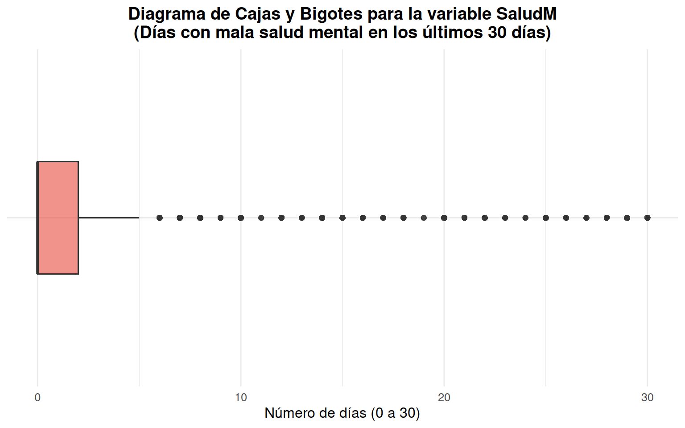
Como se ve en el IQR, el 75% de las personas reportan haber tenido 2 días o menos de mala salud mental en el último mes.
5.2.3 Variable SaludF (días de mala salud física en los últimos 30 días)
Tabla
| Estadistica | Valor |
|---|---|
| Promedio | 5.81 |
| Rango Intercuartil (IQR) | 6 (Q1: 0, Q3: 6) |
| Mínimo | 0 |
| Máximo | 30 |
Gráfico
grafico_boxplot_simple(df, "SaludF",
color = "#2980b9",
titulo = "Diagrama de Cajas y Bigotes para la variable SaludF\n(Días con mala salud física en los últimos 30 días)",
xlab = "Número de días (0 a 30)")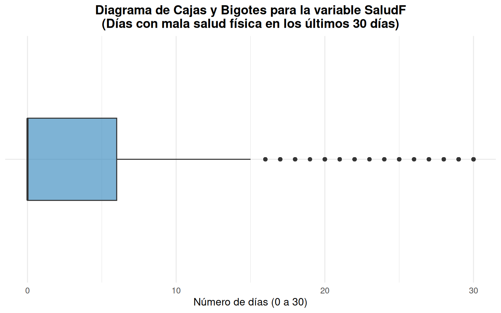
El promedio de días con mala salud física es ligeramente mayor que el de mala salud mental (5.81 días frente a 3.75).
5.3 Conclusión del análisis univariado
El análisis univariado permitió caracterizar de forma individual cada una de las variables del conjunto de datos. Se observa que la muestra está balanceada en la variable respuesta (Diabetes), mientras que la mayoría de las variables categóricas relacionadas con riesgo (presión arterial alta, colesterol alto, derrame, enfermedad cardiaca) presentan baja prevalencia en términos absolutos, aunque notablemente más alta que en la población general, dado el diseño muestral balanceado. En cuanto a las variables numéricas, el IMC presenta una distribución asimétrica positiva (cola hacia la derecha), mientras que los días de mala salud física y mental muestran medianas bajas con presencia de valores atípicos elevados. Estos hallazgos motivan el análisis bivariado desarrollado en la siguiente sección, donde se contrasta cada variable frente a la condición de diabetes.